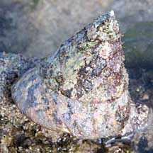
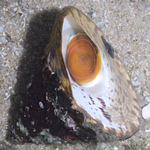
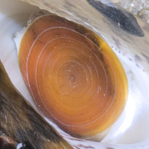
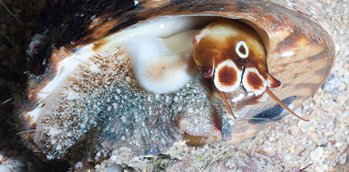
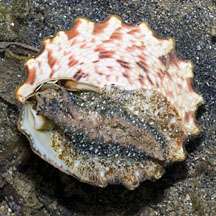
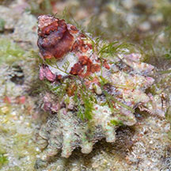
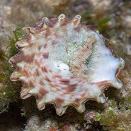
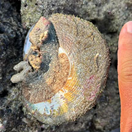
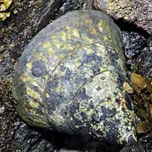
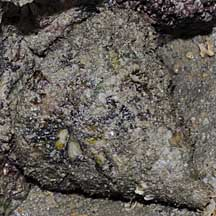

|
|
| shelled snails text index | photo index |
| Phylum Mollusca > Class Gastropoda |
| Giant
top shell snail Tectus niloticus Family Tegulidae updated Sep 2020 Where seen? This enormous conical snail is sometimes seen among large boulders and artificial seawalls on Southern shores. Elsewhere, it is found in coral reefs, typically in shallow, high-energy barrier and fringing reefs. It was previously known as Trochus niloticus in Family Trochidae. Features: Base diameter 8-15cm. The largest of our top shells, shell thick, heavy, a sharp-pointed cone, with spirals of bumpy ridges. Upperside orangey with slanted brown bars, but often hidden by encrusting lifeforms. Underside white with a pretty spiral pattern of dark red spots. Shell base outer edge on young snails is scalloped, smooth in older snails. Operculum, thin, made of a horn-like material with concentric rings, yellow or brown. The flexible operculum allows the animal to withdraw deep into the coils of the shell. Body pale mottled, foot large, mantle edge sparsely fringed with long tentacles. Head brown with three white circles and long tentacles. |
 Pulau Jong, Apr 11 |
 Sentosa, Nov 11 |
 Operculum thin with concentric rings. |
|
 Head brown with three white circles. Sparse tentacles on mantle edge. Sentosa, Nov 11 |
 Young snail. Shell base has scalloped edge. Tanah Merah, Sep 13 |
| What does it eat? It eats filamentous
algae and generally avoids sandy bottoms and living corals. Human uses: This large snail is the most economically important snail in the tropical West Pacific. Both as an important traditional food and a leading export item as the source of mother-of-pearl buttons and jewellery. Total annual harvest is estimated at 5-6 million tons. As a result of severe overfishing, in many places policies are in place to manage their harvest and aquaculture trials are underway. Status and threats: The snail used to be abundant in Singapore in the 1960's but is now listed as 'Vulnerable' on the Red List of threatened animals of Singapore. Like other creatures of the intertidal zone, it is affected by human activities such as reclamation and pollution. Trampling by careless visitors and over-collection can also have an impact on local populations. |
| Giant top shell snails on Singapore shores |
On wildsingapore
flickr
|
| Other sightings on Singapore shores |
 Young snail. Shell base has scalloped edge. St John's Island, Jan 20 Photo shared by Marcus Ng on facebook. |
 Young snail. Shell base has scalloped edge. St John's Island, Jan 20 Photo shared by Marcus Ng on facebook. |
 Terumbu Pempang Tengah, Jun 24 Photo shared by Kelvin Yong on facebook. |
 Pulau Biola, Dec 09 |
 Terumbu Berkas, Jan 10 |
| Family
Tegulidae recorded for Singapore from Tan Siong Kiat and Henrietta P. M. Woo, 2010 Preliminary Checklist of The Molluscs of Singapore. in red are those listed among the threatened animals of Singapore from Davison, G.W. H. and P. K. L. Ng and Ho Hua Chew, 2008. The Singapore Red Data Book: Threatened plants and animals of Singapore. ^from WORMS.
|
Links
References
|